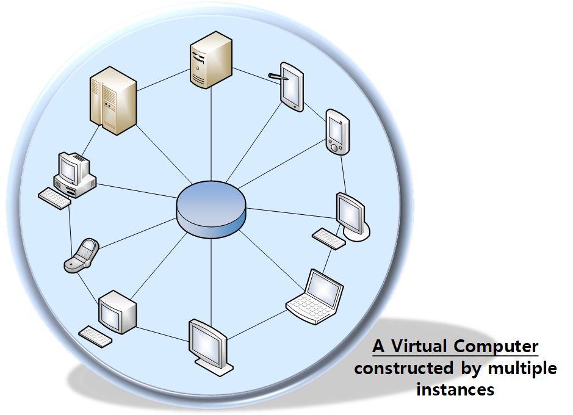

Introduction
1. Outline
1.1. TGrid


npm install --save tgrid
TGrid 의 풀네임은 TypeScript Grid Computing Framework 입니다.
TGrid 는 그 이름 그대로, TypeScript 에서 Grid Computing 시스템을 구현하는 데 유용하게 사용할 수 있는 Framework 입니다. TGrid 와 그것의 핵심 개념인 Remote Function Call 을 사용하시거든, 여러분께서는 여러 대의 컴퓨터를 단 한 대의 가상 컴퓨터로 만드실 수 있습니다. 그것이 비록 수천 ~ 수만 대에 달할 지라도 말입니다.
여타 TGrid 에 대한 자세한 내용은 아래 링크들을 참고해주세요. 특히 아래 링크 중에서 가이드 문서 의 Basic Concepts 나 Learn from Examples 단원만큼은, TGrid 를 처음 접하시는 분이시라면, 꼭 한 번 읽어보시기를 권해드립니다.
- Repositories
- Documents
1.2. Grid Computing

Computers be a (virtual) computer
TGrid 는 그 이름 그대로, TypeScript 에서 Grid Computing 시스템을 구현하는 데 유용하게 사용할 수 있는 Framework 입니다. 단, TGrid 가 말하는 Grid Computing 이란, 단순히 여러 대의 컴퓨터를 네트워크 통신을 이용하여 공통된 작업을 분산처리하는 것이 아닙니다. TGrid 가 말하는 진정한 Grid Computing 이란, 여러 대의 컴퓨터를 묶어 한 대의 가상 컴퓨터로 만들어내는 것입니다.
따라서 TGrid 기준에서의 Grid Computing 시스템이란, 그것을 구성하는 컴퓨터가 수백만 대라도, 처음부터 단 한대의 컴퓨터만 있었던 것인냥 개발할 수 있어야 합니다. 단 한 대에서 컴퓨터에서 동작하는 프로그램과, 수백만 대를 이용한 분산병렬처리시스템이 모두 동일한 프로그램 코드를 사용할 수 있어야, 그것이 바로 진정 Grid Computing 입니다.
여러분도 그렇게 생각하시나요?
1.3. Remote Function Call
TGrid 가 Grid Computing 을 실현하는 방법이란, 바로 Remote Function Call 로써, 문자 그대로 원격 시스템의 함수를 호출할 수 있다는 의미입니다. Remote Function Call 을 이용하면 여러분은 원격 시스템이 가진 객체를 마치 내 메모리 객체인 양 사용하실 수 있습니다.
TGrid 와 Remote Function Call 을 이용하면 원격 시스템의 객체와 함수를 마치 내 것인양 사용할 수 있다, 이 문장이 무엇을 의미할까요? 맞습니다, 원격 시스템의 객체와 함수를 직접 호출할 수 있다는 것은 곧, 현 시스템과 원격 시스템이 하나의 가상 컴퓨터로 통합되었다는 것을 의미합니다. 하나의 컴퓨터에 탑재된 단일 프로그램이니까, 객체간 함수도 호출할 수 있고 뭐 그런 것 아니겠습니까?
하지만 TGrid 가 말하는 진정한 Grid Computing 이 무슨 개념이니, Remote Function Call 이 어떤 이론이니... 백날 설명만 들어봐야 뭐합니까? 백문이 불여일견, 이쯤에서 실제 프로그램 코드를 한 번 봐야겠죠? 아래 예제 코드에 대하여 보다 자세히 알아보고 싶으시다면, 가이드 문서 의 Learn from Examples 단원을 참고해주세요.
import { WebConnector } from "tgrid/protocols/web/WebConnector";
import { Driver } from "tgrid/components/Driver";
import { ICalculator } from "../../controllers/ICalculator";
async function main(): Promise<void>
{
//----
// CONNECTION
//----
let connector: WebConnector = new WebConnector();
await connector.connect("ws://127.0.0.1:10102");
//----
// CALL REMOTE FUNCTIONS
//----
// GET DRIVER
let calc: Driver<ICalculator> = connector.getDriver<ICalculator>();
// FUNCTIONS IN THE ROOT SCOPE
console.log("1 + 6 =", await calc.plus(1, 6));
console.log("7 * 2 =", await calc.multiplies(7, 2));
// FUNCTIONS IN AN OBJECT (SCIENTIFIC)
console.log("3 ^ 4 =", await calc.scientific.pow(3, 4));
console.log("log (2, 32) =", await calc.scientific.log(2, 32));
try
{
// TO CATCH EXCEPTION IS STILL POSSIBLE
await calc.scientific.sqrt(-4);
}
catch (err)
{
console.log("SQRT (-4) -> Error:", err.message);
}
// FUNCTIONS IN AN OBJECT (STATISTICS)
console.log("Mean (1, 2, 3, 4) =", await calc.statistics.mean(1, 2, 3, 4));
console.log("Stdev. (1, 2, 3, 4) =", await calc.statistics.stdev(1, 2, 3, 4));
//----
// TERMINATE
//----
await connector.close();
}
main();
1 + 6 = 7 7 * 2 = 14 3 ^ 4 = 81 log (2, 32) = 5 SQRT (-4) -> Error: Negative value on sqaure. Mean (1, 2, 3, 4) = 2.5 Stdev. (1, 2, 3, 4) = 1.118033988749895
2. Strengths
2.1. Easy Development
누구나 쉽게 네트워크 연동 시스템을 만들 수 있습니다.
본래 네트워크 통신을 이용한 연동시스템을 만드는 것은 제법 어려운 일입니다. 여러 대의 컴퓨터가 어우러져 공통의 작업을 해내야 하기 때문입니다. 따라서 네트워크 연동 시스템을 개발할 때는 (요구사항을 완벽하게 분석해야 하고, 유즈케이스를 완벽하게 파악해야 하며, 데이터와 네트워크 아키텍처를 완벽하게 설계해야 하고, 상호 연동 테스트를 완벽하게 해야 하는 하는등) 프로세스의 온갖 곳에 '완벽' 이라는 무시무시한 수식어가 따라다닙니다.
읽어볼거리
하지만, TGrid 와 Remote Function Call 을 이용하면, 진정한 Grid Computing 을 실현할 수 있습니다. 네트워크로 연동된 여러 대의 컴퓨터들은 단 하나의 가상 컴퓨터로 치환됩니다. 심지어 이렇게 만들어진 가상 컴퓨터에서 동작하는 프로그램의 비지니스 로직 코드는, 실제로 단일 컴퓨터에서 동작하는 단일 프로그램의 비지니스 로직 코드와 동일하기까지 합니다.
따라서 TGrid 를 이용하시거든 네트워크 연동 시스템을 매우 쉽게 만드실 수 있습니다. 복잡하고 어려운 네트워크 프로토콜이니 메시지 구조 설계니 하는 것들은 모두 잊어버리십시오. 오로지 여러분께서 만들고자 하는 것의 본질, 비지니스 로직, 그 자체에만 집중하십시오. TGrid 를 사용하시는 이상, 여러분은 단지 한 대의 (가상) 컴퓨터에서 동작하는 단일 프로그램을 개발하는 것일 뿐입니다.
2.2. Safe Implementation
컴파일과 타입 검사를 통해, 안전한 네트워크 시스템을 만들 수 있습니다.
네트워크 통신을 이용한 분산처리시스템을 만들 때, 가장 곤혹스러운 것 중에 하나가 바로 런타임 에러입니다. 네트워크로 송수신되는 메시지가 제대로 구성되었는지, 그리고 이를 제대로 파싱하였는지, 모두 컴파일 시점이 아닌 런타임 시점에서야 오류를 인지할 수 있습니다.
종래의 방법으로 구현한 분산처리시스템에, 실은 중대한 오류가 하나 있습니다. 그리고 이를 서비스 개시 이후에나 알게 된다면, 이 얼마나 끔찍한 일이겠습니까? 그렇다고 발생 가능한 모든 네트워크 메시지와 이를 사용하는 모든 시나리오들에 대한 테스트 프로그램을 만들자니, 이 또한 얼마나 고된 일이겠습니까? 처음부터 컴파일 개념만 제대로 지원되었다면, 모든 게 참 간단했을텐데요.
TGrid 는 네트워크 분산처리시스템의 이러한 컴파일 이슈에 대하여 정확한 솔루션을 제공합니다. TGrid 는 진정한 Grid Computing 을 구현하기 위하여, 네트워크 통신에 Remote Function Call 이란 개념을 도입하였습니다. Remote Function Call 이란 무엇입니까? 함수 호출 그 자체 아니던가요? 당연하게도 TypeScript Compiler 의 보호를 받아, 타입 안정성을 보장받는 대상입니다.
즉, TGrid 와 Remote Function Call 을 사용하시거든, 무려 네트워크 시스템에 컴파일과 타입 검사라는 개념을 도입하실 수 있습니다. 그리고 이를 통해 안전하고 편안한 네트워크 시스템 구축이 가능해지죠. 백문이 불여일견, TGrid 를 이용한 Safe Implementation 의 사례를 보면서, 이번 장을 마치겠습니다.
import { WebConnector } from "tgrid/protocols/web/WebConnector"
import { Driver } from "tgrid/components/Driver";
interface ICalculator
{
plus(x: number, y: number): number;
minus(x: number, y: number): number;
multiplies(x: number, y: number): number;
divides(x: number, y: number): number;
divides(x: number, y: 0): never;
}
async function main(): Promise<void>
{
//----
// CONNECTION
//----
let connector: WebConnector = new WebConnector();
await connector.connect("ws://127.0.0.1:10101");
//----
// CALL REMOTE FUNCTIONS
//----
// GET DRIVER
let calc: Driver<ICalculator> = connector.getDriver<ICalculator>();
// CALL FUNCTIONS REMOTELY
console.log("1 + 6 =", await calc.plus(1, 6));
console.log("7 * 2 =", await calc.multiplies(7, 2));
// WOULD BE COMPILE ERRORS
console.log("1 ? 3", await calc.pliuowjhof(1, 3));
console.log("1 - 'second'", await calc.minus(1, "second"));
console.log("4 / 0", await calc.divides(4, 0));
}
main();
$ tsc src/index.ts:33:37 - error TS2339: Property 'pliuowjhof' does not exist on type 'Driver<ICalculator>'. console.log("1 ? 3", await calc.pliuowjhof(1, 3)); src/index.ts:34:53 - error TS2345: Argument of type '"second"' is not assignable to parameter of type 'number'. console.log("1 - 'second'", await calc.minus(1, "second")); src/index.ts:35:32 - error TS2349: Cannot invoke an expression whose type lacks a call signature. Type 'never' has no compatible call signatures. console.log("4 / 0", await calc.divides(4, 0));
2.3. Network Refactoring
네트워크 시스템에의 중대 변화도 매우 유연하게 대처할 수 있습니다.
네트워크 분산처리시스템을 만들다보면 늘상 생기는 이슈가 있습니다. 그것은 바로 기존의 네트워크 시스템에 어떠한 이유로 '중대 변화' 를 주어야 할 필요성이 생긴다는 것입니다. 마치 소프트웨어 리팩토링 마냥, 네트워크 시스템 수준에서도 리팩토링 이 필요해지는 순간이 온다는 것입니다.
그리고 그 중에 가장 대표적인 것이 바로 performance 이슈입니다. 본래 한 대의 컴퓨터로 처리할 수 있다고 여겨지던 작업이 있는데, 실제 서비스를 가동하여보니 워낙 연산량이 많아 이를 여러 대의 컴퓨터에 분할하여 처리해야 할 수도 있습니다. 반대로 여러 대의 컴퓨터를 준비해놨건만, 실제로는 단 한 대의 컴퓨터로도 충분했다거나 그 조차도 필요없어 해당 기능을 다른 컴퓨터에 병합해야 할 수도 있는 법입니다.
 |
 |
|---|---|
| Composite Calculator | Hierarchical Calculator |
이 performance 이슈로 인한 네트워크 리팩토링 에 대해, 간단한 예시를 들어 설명하도록 하겠습니다. 어떤 분산처리시스템에, 계산기 역할을 수행하는 서버가 한 대 있었습니다. 그런데 이 시스템을 운영해보니, 연산량이 워낙 막중하여 도저히 단 한 대의 서버로는 감당이 안 되었고, 따라서 해당 서버를 총 세 대의 서버로 분할하기로 결심합니다.
scientific: 공학용 계산기 서버statistics: 통계용 계산기 서버calculator: 메인 프레임 서버- 사칙 연산은 스스로 수행하고
- 공학용과 통계용은 다른 서버에게 전달하고 그 결과값만을 중개
만일 이 것을 TGrid 와 Remote Function Call 을 거치지 않고 종래의 방법대로 해결하려거든, 매우 고된 작업이 될 것입니다. 우선 세 대의 서버간 통신에 사용할 메시지 프로토콜부터 설계해줘야 합니다. 그리고 해당 메시지 프로토콜에 맞는 파서들을 제작해줘야 하고, 새로이 정의된 네트워크 아키텍처에 따라 이벤트 핸들링도 다시 해 줘야 합니다. 마지막으로 이러한 과정이 잘 이루어졌는지 검증해보는 것인 덤이겠죠?
변하게 되는 것들
- 네트워크 아키텍처
- 메시지 프로토콜
- 이벤트 핸들링
- 비지니스 로직 코드
하지만 TGrid 와 Remote Function Call 을 이용하면 이러한 이슈는 아무런 문젯거리도 되지 못합니다. TGrid 에서는 네트워크 시스템을 구성하는 각 서버도, 단지 일개 객체일 뿐입니다. 원격 계산기를 한 대의 서버로 만들던, 세 대의 서버에 나누어 처리하던, 그것의 비지니스 로직 코드는 모두 동일할 것입니다.
이를 가장 잘 보여주는 게 아래 두 예제입니다. 첫 번째는 단일 계산기의 코드이며, 두 번째는 해당 계산기 서버를 세 대의 서버로 분할했을 때의 코드입니다. 이를 보시면 쉬이 알 수 있듯이, TGrid 와 Remote Function Call 을 사용하시거든 네트워크 시스템 구조가 대거 변하더라도, 여러분께선 아무 염려하지 않으셔도 됩니다.
3. Opportunities
3.1. Blockchain
자세한 내용: Appendix > Blockchain
TGrid 를 이용하면, 블록체인 프로젝트를 쉽게 개발할 수 있습니다.
블록체인 프로젝트의 개발 난이도가 높다는 것은 매우 유명한 이야기입니다. 구태여 블록체인 개발자들의 몸값이 다락같이 높아서 그런 것만이 아닙니다. 순 기술적인 관점에서 보더라도, 블록체인은 그 자체로 난이도가 매우 높습니다. 단, 기술적으로 무엇이 그렇게 어렵냐고 물었을 때, 저는 이렇게 말하고 싶습니다. 진정 어려운 것은 Network System 때문이지, Business Logic 때문은 아니라고 말입니다.
블록체인이 사용하는 Network System 은, 기본적으로 수 만 ~ 수십 만 대의 컴퓨터가 네트워크 통신으로 어우러져 연동되는, 초대형 분산처리 시스템입니다. 그리고 이런 종류의 초대형 분산처리 시스템들은 하나같이, 어마무시한 난이도를 자랑합니다. 이를 개발하는 모든 과정에 '완벽' 이라는 무시무시한 수식어가 따라다닙니다. 완벽한 요구사항 분석, 완벽한 유즈케이스 도출, 완벽한 개념 설계와 데이터 구조 정립, 완벽한 네트워크 아키텍처 수립, 완벽한 구현과 모든 케이스를 아우르는 완벽한 테스트 프로그램 제작 등...
반면에 블록체인의 Business Logic 은 그렇게까지 어렵지 않습니다. 블록체인의 핵심 요소를 말하라 그러면, 그 이름 그대로 "첫째는 Block 이요, Chain 입니다" 라고 대답할 수 있습니다. 이 중 Block 은 어떤 데이터를 다루냐에 관한 것이고, Chain 은 블록에 데이터를 기록함에 있어 '상호간 어떻게 합의할까' 같은 정책에 관한 것입니다.
| Component | Conception | Description |
|---|---|---|
| Block | Data Structure | 데이터를 저장하는 방법 |
| Chain | Requirements | 합의 도출에 관한 정책 |
만일 이 Block 과 Chain 을 단 한대의 컴퓨터에서 동작하는 단일 프로그램으로 개발한다고 생각해봅시다. 이 경우에는 그저 자료구조를 설계하여 이를 디스크에 저장할 수 있고, 정책 (요구사항) 을 분석하여 코드로 구현할 수만 있으면 됩니다. 소양있는 개발자라면 누구나 만들 수 있는 것, 그것이 바로 블록체인의 Remote Function Call 입니다. 여러분도 얼마든지 해내실 수 있습니다.
그리고 TGrid 와 Remote Function Call 을 이용하면, 진정한 Grid Computing 을 실현할 수 있습니다. 네트워크로 연동된 여러 대의 컴퓨터들은 단 하나의 가상 컴퓨터로 치환됩니다. 그리고 이렇게 만든 가상 컴퓨터에서 동작하는 코드는, 실제 단 한 대의 컴퓨터에서 동작하는 프로그램과 그 Business Logic 코드가 동일합니다.
따라서 TGrid 와 Remote Function Call 을 사용하면, 블록체인 프로젝트의 개발 난이도는 Network System 이 아닌 Business Logic 수준으로 확 떨어집니다. 여러분께서는 복잡한 Network System 따위 잊어버리시고, 그저 여러분이 만들고자 하시는 것의 본질, Business Logic 그 자체에만 집중하십시오.
3.2. Public Grid
관련 프로젝트: Tutorial > Projects > Grid Market
TGrid 를 사용하면, Grid Computing 에 필요한 자원을 불특정 다수로부터 매우 쉽게, 그리고 저렴하게 조달할 수 있습니다.
Grid Computing 을 구성할 때는 당연하게도 여러 대의 컴퓨터가 필요합니다. 이 때 필요한 컴퓨터 대수가 많아지면 많아질수록, 이를 조달하기 위해 갖춰야 하는 인프라와 제반 비용도 덩달아 올라가기 시작합니다. 게다가 이렇게 조달한 각 컴퓨터에 일일히 필요한 프로그램을 설치하고, 네트워크 통신을 위한 다양한 설정을 해야 하는 등, 그 수고로움 또한 무던히 증가하게 됩니다. 뭐 너무나도 당연한 얘기인가요?
| Name | Consumer | Supplier |
|---|---|---|
| Who | Grid Computing 시스템 제작 희망자 | 인터넷 접속이 가능한 불특정 다수 |
| What | Supplier 의 자원을 가져다 씀 | Consumer 에게 자신의 자원을 제공함 |
| How | 각 Supplier 가 구동할 프로그램 코드 제공 | 인터넷 브라우저로 특정 URL 접속 |
하지만, TGrid 를 사용하면 이 비용과 수고조차도 획기적으로 줄일 수 있습니다. Grid Computing 에 필요한 컴퓨터를 불특정 다수로부터 조달할 수 있으며, 이들 불특정 다수의 컴퓨터에는 그 무엇도 설치하거나 설정할 필요가 없습니다. 단지 이들이 인터넷에 연결되어있고, 브라우저를 실행하여 특정 URL 에 접속할 수만 있으면 됩니다.
각 Supplier 가 구동해야 할 프로그램은 Consumer 가 JavaScript 코드로써 제공합니다. 각 Supplier 는 Consumer 가 건네준 스크립트를 가동하여, (Supplier 가 정해준) 그들의 역할을 수행하게 될 것입니다. 물론 Supplier 와 Consumer 의 연동 (혹은 제 3 의 컴퓨터와의 연동) 에는 모두 Remote Function Call 가 사용될 것이니, 이들은 모두 하나의 가상 컴퓨터일 뿐입니다.
TGrid 의 기반 언어인 TypeScript 의 컴파일 결과물은 JavaScript 파일이며, JavaScript 는 스크립트 언어이기에 동적 실행이 가능합니다. 따라서 Consumer 가 건네준 프로그램 코드를 Supplie 가 그대로 실행하는 것 또한 가능합니다.

그리고 이러한 Public Grid 의 가장 전형적인 사례 중 하나가 바로, TGrid 에서 데모 프로젝트로 제공하는 Grid Market 입니다. 이 데모 프로젝트에서도 Consumer 는 Grid Computing 시스템을 구성하기 위하여 Supplier 의 자원을 빌려다 쓰며, Supplier 는 인터넷 브라우저의 특정 URL 에 접속하는 것만으로도 Consumer 에게 자신의 자원을 제공할 수 있습니다. 물론 Grid Market 에서도 여전히, Supplier 가 실행할 프로그램은 Consumer 가 제공합니다.
다만, Grid Market 에 특이사항이 하나 있다면, 그것은 바로 Consumer 가 Supplier 의 자원을 가져다 쓰는 데에 대가가 따른다는 것입니다. 더불어 중개시장 Market 이 존재하여, Consumer 와 Supplier 간의 매칭을 알선하고 그 대가로 일정 수수료를 징수합니다.
Market: 자원을 사고팔 수 있는 중개 시장Consumer: Supplier 의 자원을 구매하여 이를 사용함Supplier: Consumer 에게 자신의 자원을 제공함
3.3. Market Expansions
Grid Computing 에 관련된 시장은 나날이 성장해나갈 것입니다.
미래는 준비하는 자의 것입니다. TGrid 와 Remote Function Call 을 통하여, 다가오는 미래에 대비하시고, 나아가 한 몫 단단히 잡으시기를 바랍니다.